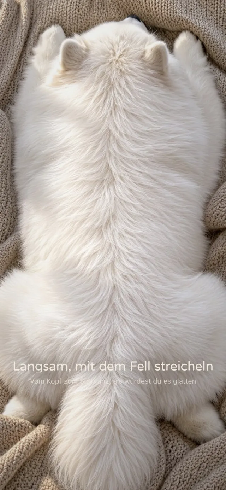
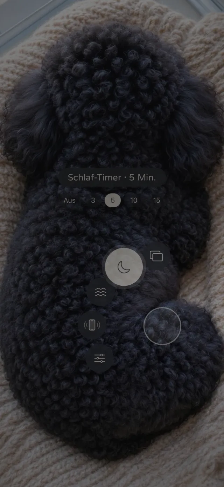
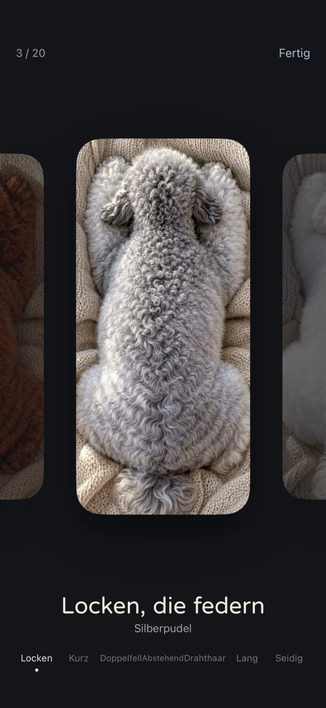

Eine beruhigende iPhone-App für die Zeit vor dem Schlafen
Einen schlafenden Hund streicheln
und zur Ruhe kommen.
Streichle langsam mit dem Strich. Das Fell legt sich unter deinem Finger um und federt zurück, sobald du loslässt. Wenn du weitermachst, wird die Atmung des Hundes langsamer, bis er fest schläft.
Im App Store laden- ✓ 20 Hunde, 7 Fellarten
- ✓ Keine Punkte, Aufgaben oder Fütterung
- ✓ Kein Konto nötig

Gefühl
Das Fell bewegt sich wirklich
Streichelst du mit dem Strich, legt sich das Fell in Richtung deines Fingers und richtet sich danach langsam wieder auf. Streichelst du gegen den Strich, sträubt sich das Fell eine Weile, bevor es sich wieder legt. Locken federn, langes Haar folgt der Hand mit etwas Verzögerung, kurzes Fell bleibt glatt.
Menü
Finger ruhig halten, dann öffnet sich das Menü neben dem Daumen
Beim Streicheln ist nichts auf dem Bildschirm zu sehen. Um den Hund zu wechseln oder einen Timer einzustellen, halte den Finger 0,8 Sekunden still. Neben dem Daumen öffnen sich fünf Tasten. Gleite ohne abzusetzen zu einer Taste und lasse dann los.

Hunde
20 Hunde, einer nach dem anderen
Der Schwarze Pudel, der Latte-Kurzhaar, der Shiba Inu, der Samojede und der Golden Retriever sind kostenlos. Die anderen 15 sind Mitgliedern vorbehalten. Du kannst einen davon 20 Sekunden lang ausprobieren oder eine Werbung ansehen, um ihn für den Tag zu streicheln.

Schlafenszeit
Der Hund schläft ein, und du vermutlich bald auch
Nach etwa einer Minute langsamen Streichelns schläft der Hund tief, und der Bildschirm wird dunkler. Ist der Schlaf-Timer eingeschaltet, blendet die Atmung nach Ablauf der Zeit aus, und der Bildschirm wird schwarz. Mit einem Tippen kehrst du zurück.
▲ Beim Streicheln sind keine Tasten auf dem Bildschirm.
Geeignet für
- Im Bett vor dem Einschlafen
- Wenn die Gedanken nicht zur Ruhe kommen
- Beim Warten auf den Bus oder in der Schlange
- Wenn du deinen eigenen Hund vermisst
Details
| Hunde | 20 (5 kostenlos) |
|---|---|
| Fell | 7 Arten: Lockenfell, Kurzhaar, Doppelfell, abstehendes Fell, Drahthaar, Langhaar, Seidenhaar |
| Ton | Nur sehr leises Atemgeräusch, abschaltbar |
| Haptik | Gelegentliches Antippen, wenn der Hund reagiert, abschaltbar |
| Konto | Nicht nötig |
| Preis | Kostenlos mit Werbung; die Mitgliedschaft ist ein Einmalkauf |
| Voraussetzung | iPhone mit iOS 17 oder neuer |
Werbung erscheint nur am unteren Rand der Hundeauswahl und der Einstellungen. Auf dem Bildschirm zum Streicheln wird keine Werbung angezeigt.
Kostenlos
- 5 Hunde
- Schlaf-Timer, Atemgeräusch und Haptik
- Werbung am unteren Rand der Hundeauswahl und der Einstellungen
- Mit einer angesehenen Werbung einen gesperrten Hund für den Tag streicheln
Mitgliedschaft (Einmalkauf)
- Alle 20 Hunde
- Keine Werbung
- Später hinzukommende Hunde sind enthalten
- Wiederherstellung auf einem neuen iPhone mit demselben Apple-Account